건축산업기사 (2011-08-21 기출문제)
1과목: 건축계획
1. 학교의 배치계획에 관한 설명으로 옳지 않은 것은?
- 분산병렬형은 넓은 교지가 필요하다.
- 폐쇄형은 운동장에서 교실로의 소음이 크다.
- 폐쇄형은 대지의 이용률은 높일 수 있으나 화재 및 비상시 불리하다.
- 분산병렬형은 일조, 통풍 등 환경 조건이 좋으나 구조계획이 복잡하다.
(정답률: 75%)

2. 상점의 판매형식 중 대면판매에 관한 설명으로 옳은 것은?
- 측면판매에 비하여 진열면적이 커진다.
- 측면판매에 비하여 포장하기가 편리하다.
- 측면판매에 비하여 충동적 구매와 선택이 용이하다.
- 측면판매에 비하여 판매원의 정위치를 정하기 어렵다.
(정답률: 86%)
3. 공장 건축의 레이아웃(Layout)에 관한 설명 중 옳지 않은 것은?
- 공장의 생산성에 큰 영향을 미친다.
- 중화학공업 등 장치공업은 레이아웃의 유연성이 크다.
- 제품 중심의 레이아웃은 대량 생산에 유리하며 생산성이 높다.
- 공정 중심의 레이아웃은 다품종 소량 생산이나 주문 생산의 경우와 표준화가 어려운 경우에 적합하다.
(정답률: 75%)
4. 다음 중 단독주택의 현관 위치 결정에 가장 주된 영향을 끼치는 것은?
- 방위
- 건폐율
- 주택의 규모
- 도로의 위치
(정답률: 97%)
5. 사무소 건축의 실(室) 단위계획에 관한 설명으로 옳은 것은?
- 개실 시스템은 독립성과 쾌적감의 이점이 있다.
- 오피스 랜드스케이핑은 개실 시스템의 한 형식이다.
- 개방식 배치는 소음은 없으나 공사비가 비교적 고가이다.
- 개실 시스템은 방 깊이에는 변화를 줄 수 있으나, 방 길이에는 변화를 줄 수 없다.
(정답률: 64%)
6. 상점의 공간을 판매공간, 부대공간, 파사드공간으로 구분할 경우, 다음 중 판매공간에 해당하지 않는 것은?
- 통로공간
- 서비스공간
- 상품전시공간
- 상품관리공간
(정답률: 90%)
7. 공장 건축에서 효율적인 자연채광 유입을 위해 고려해야 할 사항으로 옳지 않은 것은?
- 가능한 동일 패턴의 창을 반복하는 것이 좋다.
- 빛을 차단하는 젖빛 유리나 프리즘 유리는 사용하지 않는다.
- 벽면 및 색채계획 시 빛의 반사에 대한 면밀한 검토가 필요하다.
- 공장은 대부분 기계류를 취급하므로 가능한 한 창을 크게 설치하는 것이 효율적이다.
(정답률: 72%)
8. 사무소 건축에서 코어 시스템(Core system)을 채용하는 이유로 옳지 않은 것은?
- 독립성 확보
- 구조적 이점
- 설비비 절약
- 유효면적 증가
(정답률: 68%)
9. 사무소건축에서 엘리베이터의 조닝(Zoning)에 대한 설명으로 옳지 않은 것은?
- 일주시간이 증가한다.
- 유효면적이 증가한다.
- 엘리베이터의 설비비가 감소한다.
- 이용자가 혼란에 빠질 우려가 있다.
(정답률: 61%)
10. 연면적이 500m2인 공동주택에서 2세대 이상이 공동으로 사용하기 위해 설치하는 복도의 유효 너비는 최소 얼마 이상이어야 하는 가?(단, 갓복도인 경우)
- 0.9m
- 1.2m
- 1.5m
- 1.8m
(정답률: 53%)
11. 아파트의 평면 형식 중 계단실형에 관한 설명으로 옳은 것은?
- 독신자 아파트에 주로 채용된다.
- 집중형에 비해 부지의 이용률이 높다.
- 복도형에 비해 거주의 독립성이 높다.
- 중복도형에 비해 1대의 엘리베이터에 대한 이용 가능한 세대수가 많다.
(정답률: 84%)
12. 백화점에 설치하는 에스컬레이터에 관한 설명으로 옳지 않은 것은?
- 수송량에 비해 점유면적이 작다.
- 설치 시 층고 및 보의 간격에 영향을 받는다.
- 비상계단으로 사용할 수 있어 방재계획에 유리하다.
- 교차식 배치는 연속적으로 승강이 가능한 형식이다.
(정답률: 87%)
13. 학교 운영방식에 관한 설명으로 옳지 않은 것은?
- 일반 및 특별교실형은 우리나라 대부분의 중학교에서 적용되고 있는 방식이다.
- 교과교실형은 학년 및 학급을 편성하지 않고 능력별로 수업을 진행하는 방식이다.
- 플래툰형은 모든 시설의 효율적인 이용을 도모한 유형으로 교과교실형보다 이동이 적다.
- 종합교실형은 하나의 교실에서 모든 교과수업을 행하는 방식으로 초등학교 저학년에 적합하다.
(정답률: 74%)
14. 초등학교 건축의 블록플랜(Block plan)에 관한 설명으로 옳지 않은 것은?
- 학년단위를 원칙으로 한다.
- 동 학년의 학급은 균일한 환경 조건으로 한다.
- 저학년은 2층 이상에 배치하여 고학년과의 접촉을 배제한다.
- 동 학년의 학급은 근접만을 목적으로 할 것이 아니라 동일한 층에 모으는 고려가 필요하다.
(정답률: 86%)
15. 사무소 건축의 층고 계획으로 가장 부적절한 것은?
- 1층 층고 : 400cm
- 기준층 층고 : 360cm
- 최상층의 층고 : 기준층과 동일
- 중2층을 설치하는 1층의 층고 : 600cm
(정답률: 80%)
16. 백화점에서 주통로의 폭으로 가장 적절한 것은?
- 1.8m
- 2.0m
- 2.5m
- 3.0m
(정답률: 56%)
17. 경사지를 적절히 이용할 수 있으며, 각 호마다 전용의 정원을 갖는 주택 형식은?
- 로우 하우스(Row house)
- 타운 하우스(Town house)
- 파티오 하우스(Patio house)
- 테라스 하우스(Terrace house)
(정답률: 88%)
18. 다음 중 근린주구 생활권의 주택지의 단위로서 규모가 가장 작은 것은?
- 인보구
- 근린주구
- 근린지구
- 근린분구
(정답률: 89%)
19. 아파트의 블록플랜(Block plan) 결정 조건으로 옳지 않은 것은?
- 각 단위평면은 2면 이상 외기에 접하도록 한다.
- 현관은 계단으로부터 최대 12m 이내에 있도록 한다.
- 각 단위평면의 중요한 실은 균등한 조건을 가지도록 한다.
- 거실과 같은 세대의 중요한 실이 모서리나 구석 등에 배치되지 않도록 한다.
(정답률: 69%)
20. 주택 설계의 방향에 관한 설명 중 옳지 않은 것은?
- 가사노동이 경감되도록 한다.
- 좌식과 입식이 혼용되도록 한다.
- 가장(家長) 중심의 공간이 되도록 한다.
- 생활의 쾌적함이 증대되도록 한다.
(정답률: 86%)
2과목: 건축시공
21. 지명경쟁입찰을 선택하는 가장 중요한 이유는?
- 양질의 시공 결과 기대
- 공사비의 절감
- 준공기일의 단축
- 담합 등의 폐해 발생 예방
(정답률: 82%)
22. AE 콘크리트에 관한 설명 중 옳지 않은 것은?
- 기상작용이 심한 경우 사용되는 경우가 많다.
- AE 공기량은 온도가 높을수록 증대된다.
- 블리딩, 재료분리 및 경화에 따른 발열이 감소한다.
- 부착강도가 저하한다.
(정답률: 60%)
23. 치장줄눈시공에서 타일붙임이 끝난 후 줄눈파기는 최소 몇 시간이 경과한 때부터 하는 것이 좋은가?
- 1시간
- 3시간
- 24시간
- 48시간
(정답률: 84%)
24. 창호와 창호철물이 상호 관련성이 없는 것은?
- 자재문 - 자유경첩
- 아코디언문 - 실린더
- 오르내리창 - 크레센트
- 여닫이문 - 도어클로저
(정답률: 61%)
25. 목재의 변재와 심재에 대한 설명으로 옳지 않은 것은?
- 심재는 변재보다 목재의 수심 가까이에 위치한다.
- 심재는 변재보다 신축이 작다.
- 변재는 심재보다 내후성이 크다.
- 변재는 심재보다 강도가 약하다.
(정답률: 78%)
26. 지반개량공법 중 다짐법이 아닌 것은?
- 바이브로플로테이션공법
- 바이브로컴포저공법
- 샌드드레인공법
- 샌드컴팩션파일공법
(정답률: 80%)
27. 철근의 용접으로 강도가 약하여 구조용으로 사용하지 않는 용접법은?
- 아크용접
- 가스용접
- 플러시버트용접
- 가스압접
(정답률: 73%)
28. 지반조사 항목 및 종류로 옳은 것은?
- 지하탐사법에는 짚어보기, 물리적 탐사법 등이 있다.
- 사운딩시험에는 표준관입시험, 워시 보링 등이 있다.
- 샘플링에는 흙의 물리적시험과 흙의 역학적시험이 있다.
- 토질시험에는 평판재하시험과 시험말뚝박기가 있다.
(정답률: 64%)
29. 계측관리 항목 및 기기가 잘못 짝지어진 것은?
- Earth pressure cell - 가시설 벽체에 가해지는 로드의 추이를 측정
- Water level meter - 지하수위 변화를 실측
- Tilt meter - 인접 건축물의 벽체나 슬래브 바닥에 설치하여 구조물의 변형 상태를 측정
- Load cell - 흙막이벽의 응력변화 측정
(정답률: 71%)
30. 테라조 현장갈기 시공에 있어 줄눈대를 넣는 목적으로 옳지 않은 것은?
- 바름의 구획 목적
- 균열 방지 목적
- 보수 용이 목적
- 마모 감소 목적
(정답률: 55%)
31. 고분자수지와 건성유를 가열융합하고 건조제를 넣어 용제로 녹인 것으로 붓칠 시공이 가능하며 건조가 빠르고 광택이나 투명한 도막을 만드는 도료는?
- 에나멜페인트
- 바니시
- 래커
- 합성수지에멀션페인트
(정답률: 76%)
32. 다음 중 공사 진행의 일반적인 순서로 가장 알맞은 것은?
- 공사착공 준비 → 가설공사 → 토공사 → 지정 및 기초공사 → 구조체공사
- 공사착공 준비 → 토공사 → 가설공사 → 지정 및 기초공사 → 구조체 공사
- 공사착공 준비 → 지정 및 기초공사 → 가설공사 → 토공사 → 구조체 공사
- 공사착공 준비 → 구조체 공사 → 지정 및 기초공사 → 토공사 → 가설공사
(정답률: 81%)
33. 다음 중 지붕의 물매를 결정짓는 요소와 가장 관계가 먼 것은?
- 지붕면의 크기
- 지붕재료의 성질, 크기, 모양
- 풍우량, 적설량
- 지붕틀의 종류
(정답률: 57%)
34. 네트워크(Network) 공정표에서 더미(Dummy)에 관한 설명으로 옳은 것은?
- 작업의 상호 관계만을 표시하는 점선 화살표
- 네트워크의 결합점 및 개시점, 종료점
- 작업을 수행하는 데 필요한 시간
- 작업의 여유시간
(정답률: 64%)
35. 실리카질 시멘트(Silica cement)의 특징으로 옳지 않은 것은?
- 초기강도는 크나, 장기강도는 감소한다.
- 화학적 저항성이 크고 내수성이 크다.
- 알칼리골재반응에 의한 팽창의 억제에 유리하다.
- 블리딩이 감소하고, 워커빌리티를 증가시킬 수 있다.
(정답률: 76%)
36. 아스팔트방수에 대한 설명으로 옳지 않은 것은?
- 작업 시 악취가 적은 장점이 있다.
- 옥상, 평지붕, 지하실 등에 많이 쓰인다.
- 결함부의 발견이 쉽지 않다.
- 방수가 확실하고 보호처리를 잘하면 내구적이다.
(정답률: 63%)
37. 다음 건설기계 중 정치식 크레인에 해당하지 않는 것은?
- 타워크레인(Tower crane)
- 러핑크레인(Luffing crane)
- 지브크레인(Jib crane)
- 크롤러크레인(Crawler crane)
(정답률: 75%)
38. 콘크리트 타설 방법에 대한 설명으로 옳지 않은 것은?
- 콘크리트의 워커빌리티, 타설 장소의 시공조건 등에 따라 타설 속도를 정한다.
- 콘크리트를 2층 이상으로 나누어 타설할 경우 상층의 콘크리트는 하층의 콘크리트가 굳기 시작한 후에 타설한다.
- 1개소에 타설하지 않고 표면을 수평으로 거의 같은 높이가 되도록 타설한다.
- 타설은 모멘트가 큰 곳부터 시작한다.
(정답률: 56%)
39. 조적식 구조의 벽체에 개구부가 있을 때 보강 방법으로 옳지 않은 것은?
- 강재 창호틀 설치
- 콘크리트 인방보 설치
- 프리캐스트부재 설치
- 평아치 쌓기
(정답률: 41%)
40. 커튼월의 빗물침입의 원인이 아닌 것은?
- 표면장력
- 모세관현상
- 기압차
- 삼투압
(정답률: 70%)
3과목: 건축구조
41. 그림과 같은 캔틸레버보에서 A지점의 휨모멘트 값은?
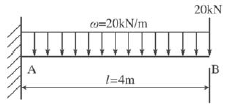
- -240kNㆍm
- -160kNㆍm
- 160kNㆍm
- 240kNㆍm
(정답률: 45%)
42. 그림과 같이 슬래브 상부근이 90° 표준갈고리로 벽체에 인장 정착될 경우 기본정착길이는?(단, D13 철근 사용, D13의 공칭 지름 =12.70mm, fck=24MPa, fy=400MPa, 에폭시 도막되지 않은 경우, mc=2,300kg/m3)
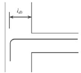
- 260mm
- 250mm
- 240mm
- 230mm
(정답률: 45%)
43. 철근콘크리트슬래브의 내부 경간에서의 정계수휨모멘트/정적계수휨모멘트(Mo)의 비율은?
- 0.25
- 0.35
- 0.45
- 0.65
(정답률: 50%)
44. 그림과 같이 단면이 균일한 캔틸레버 보의 끝단에 하중 가작용하여 x만큼의 변위가 발생하였다. 같은 하중에서 끝단의 처짐이6x가 되기 위해서는 보의 길이를 기존 길이의 몇 배로 해야 하는가?
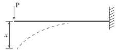
- 1.62배
- 1.82배
- 2.02배
- 2.22배
(정답률: 63%)
45. 그림과 같은 철근콘크리트기둥에서 띠철근의 수직간격으로 옳은 것은?
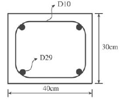
- 30cm 이하
- 32cm 이하
- 46cm 이하
- 48cm 이하
(정답률: 70%)
46. 건축물의 부동침하를 막기 위한 방법으로 옳지 않은 것은?
- 지중보를 크게 한다.
- 기초 크기를 같게 한다.
- 지반 반력을 같게 한다.
- 복잡한 평면 구성을 피한다.
(정답률: 49%)
47. 그림과 같은 목재 단순보에서 단면에 생기는 최대전단응력도를 구하면?(단, 보의 단면은 150×200mm이다.)
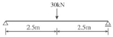
- 0.5MPa
- 0.65MPa
- 0.75MPa
- 0.85MPa
(정답률: 62%)
48. 그림과 같은 구조물의 판별 결과로 옳은 것은?
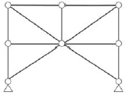
- 정정
- 불안정
- 1차 부정정
- 2차 부정정
(정답률: 49%)
49. 그림과 같은 휨모멘트가 생길 경우 보의 양단 지점 조건으로 옳은 것은?
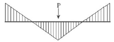
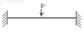
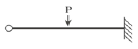
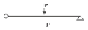
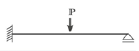
(정답률: 81%)
50. 다음 그림에서 중앙부 T형 보의 유효폭 b의 값은?(단, 보의 스팬은 8.4m이다.)
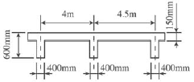
- 4,250mm
- 3,150mm
- 2,800mm
- 2,100mm
(정답률: 60%)
51. 건축구조의 특징에 관한 설명 중 옳지 않은 것은?
- 돌구조는 주요 구조부를 석재를 써서 구성한 구조로 내구적이나 횡력에 약하다.
- 벽돌구조는 지진과 바람같은 횡력에 약하고 균열이 생기기 쉽다.
- 보강 블록조는 블록의 빈 속에 철근을 배근하고 콘크리트를 채워 넣은 것으로 보통 블록구조보다 횡력에 잘 견딜 수 있다.
- 철골철근콘크리트구조는 철골구조에 비해 내화성이 부족하고, 철근콘크리트구조에 비해 자중이 무겁다는 단점이 있다.
(정답률: 72%)
52. 그림과 같은 부정정구조의 BA부재에 대한 분배율을 구하고자 한다. 분배율BA로 옳은 것은?
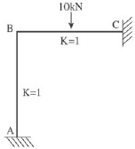
- 0
- 0.5
- 0.75
- 1.0
(정답률: 38%)
53. 300×600mm의 단면으로 설계된 보의 균형철근비를 구하면?(단, 4-D22, fck=24MPa, fy=400MPa)
- 0.026
- 0.032
- 0.045
- 0.⑤2
(정답률: 46%)
54. 다음과 같은 동질의 단면재를 보로 사용할 경우 X축에 관한 휨강도의 관계로 옳은 것은?
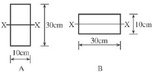
- A=1.5B
- A=2.0B
- A=2.5B
- A=3.0B
(정답률: 37%)
55. 다음에서 설명하고 있는 하중의 명칭은?
- 횡하중
- 연직하중
- 지진하중
- 충격하중
(정답률: 74%)
56. 진한 색으로 이루어진 도형의 도심 G에서 X축까지의 거리
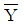
는?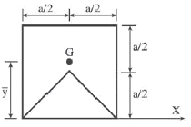
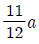
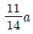
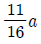
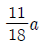
(정답률: 27%)
57. 철근콘크리트구조의 철근 배근 시 간격 제한에 대한 기준으로 옳지 않은 것은?
- 동일 평면에서 평행하는 철근 사이의 수평 순간격은 25mm 이상이어야 한다.
- 나선철근과 띠철근 기둥에서 종방향 철근의 순간격은 50mm 이상, 또한 철근공칭지름의 2배 이상으로 하여야 한다.
- 벽체 또는 슬래브에서 휨 주철근의 간격은 벽체나 슬래브 두께의 3배 이하로 하여야 한다.
- 상단과 하단에 2단 이상으로 배치된 경우 상하철근은 동일 연직면 내에 배치되어야 하고, 이때 상하철근의 순간격은 25mm 이상으로 하여야 한다.
(정답률: 49%)
58. 그림과 같은 양단고정보에서 A지점의 반력 모멘트 MA는? (단, 보의 휨강도 EI는 일정하다.)
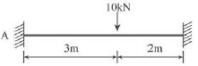
- 2.6kNㆍm
- 3.2kNㆍm
- 4.8kNㆍm
- 5.4kNㆍm
(정답률: 51%)
59. 정정구조물에서 하중 ω, 전단력 V, 모멘트 M의 관계식 중 옳은 것은?(단, x는 지점에서 임의 단면까지의 거리)
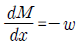
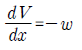
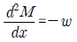
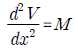
(정답률: 40%)
60. 강도설계법에 의한 철근콘크리트 보에서 장방형 등가블록의 깊이 는 압축연단에서 중립축까지의 거리 c의 몇 배인가?(단, fck=28MPa)
- 0.9
- 0.85
- 0.8
- 0.75
(정답률: 70%)
4과목: 건축설비
61. 3층 사무소 건물의 각 층에 옥내소화전이 각각 3개씩 설치되었다. 옥내소화전설비의 수원의 저수량은 최소 얼마 이상이어야 하는가?
- 6.2m3
- 7.8m3
- 8.2m3
- 9.2m3
(정답률: 78%)
62. 급수배관설계 및 시공상의 주의사항에 관한 설명으로 옳지 않은 것은?
- 바닥 또는 벽을 관통하는 배관은 슬리브배관으로 한다.
- 초고층 건물은 과대한 급수압으로 인한 피해를 줄이기 위해 급수조닝을 한다.
- 배관계통에는 지수(Stop)밸브를 달아서 급수계통의 수량 및 수압을 조정할 수 있도록 한다.
- 배관계통의 수압시험은 가장 정확도가 높은 시험으로 모든 배관공사를 완료한 후에 실시하는 것이 원칙이다.
(정답률: 59%)
63. 배수관의 관경에 대한 설명으로 옳지 않은 것은?
- 배수관은 배수의 유하방향으로 관경을 축소해서는 안 된다.
- 기구배수관의 관경은 이것에 접속하는 위생기구의 트랩 구경 이상으로 한다.
- 배수수직관의 관경은 이것에 접속하는 배수수평지관의 최대관경보다 작게 한다.
- 배수수평지관의 관경은 이것에 접속하는 기구배수관의 최대관경 이상으로 한다.
(정답률: 62%)
64. 온수난방에서 역환수방식(Reverse return system)을 채택하는 주된 이유는?
- 순환펌프를 설치하기 위해
- 배관의 길이를 축소하기 위해
- 열손실과 발생소음을 줄이기 위해
- 온수의 유량분배를 균일하게 하기 위해
(정답률: 84%)
65. 공기조화방식 중 냉, 온풍의 혼합으로 인한 혼합손실이 있어서 에너지소비량이 많은 방식은?
- 정풍량 단일덕트방식
- 변풍량 단일덕트방식
- 이중덕트방식
- 유인유닛방식
(정답률: 81%)
66. 다음 중 급수의 오염 원인과 가장 거리가 먼 것은?
- 크로스 커넥션
- 금속관의 부식
- 수도직결방식의 채용
- 역사이펀 작용의 발생
(정답률: 78%)
67. 전선의 굵기를 결정하는 요소에 해당하지 않는 것은?
- 전압강하
- 기계적강도
- 허용전류
- 분기회로수
(정답률: 58%)
68. 다음 중 직접난방방식에 해당하지 않는 것은?
- 증기난방
- 온수난방
- 복사난방
- 온풍난방
(정답률: 67%)
69. 거치용 축전지 중 알칼리축전지에 관한 설명으로 옳지 않은 것은?
- 저온특성이 좋다.
- 부식성의 가스가 발생한다.
- 공칭전압은 1.2V/셀이다.
- 극판의 기계적 강도가 강하다.
(정답률: 47%)
70. 수도직결 급수방식에서 기구의 소요압력이 70kPa이고 수전 높이가 10m일 때 수도본관에는 최소 얼마의 압력이 있어야 급수가 가능한가?(단, 배관 중 마찰손실은 40kPa이다.)
- 70kPa
- 120kPa
- 170kPa
- 210kPa
(정답률: 56%)
71. 다음 설명에 알맞은 간선의 배선방식은?
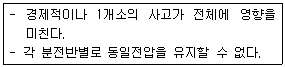
- 평행식
- 루프식
- 나뭇가지식
- 나뭇가지평행식
(정답률: 80%)
72. 천장면을 여러 형태의 사각, 동그라미 등으로 오려내고 다양한 형태의 매입기구를 취부하여 단조로움을 피하는 건축화 조명방식은?
- 코브조명
- 코퍼조명
- 밸런스조명
- 광천장조명
(정답률: 48%)
73. 다음 중 생물화학적 산소요구량을 나타내는 것은?
- ppm
- SS
- COD
- BOD
(정답률: 89%)
74. 복사난방에 관한 설명으로 옳지 않은 것은?
- 실내의 쾌적감이 높다.
- 바닥의 이용도가 높다.
- 방을 개방상태로 하여도 난방효과가 있다.
- 외기온도 급변에 따른 방열량 조절이 용이하다.
(정답률: 77%)
75. 배수트랩의 종류에 해당하지 않는 것은?
- D트랩
- S트랩
- P트랩
- U트랩
(정답률: 66%)
76. 배수트랩의 봉수깊이를 너무 깊게 할 경우 나타나는 현상은?
- 통수능력이 커진다.
- 봉수가 쉽게 파괴된다.
- 하수가스 발생의 원인이 된다.
- 침전물에 의해 트랩이 막힌다.
(정답률: 64%)
77. 형광등에 관한 설명으로 옳지 않은 것은?
- 점등까지 시간이 걸린다.
- 백열전구에 비해 효율이 높다.
- 백열전구에 비해 수명이 길다.
- 백열전구에 비해 열을 많이 발산한다.
(정답률: 72%)
78. 보일러의 출력표시 중 난방부하와 급탕부하를 합한 용량으로 표시되는 것은?
- 정미출력
- 상용출력
- 정격출력
- 과부하출력
(정답률: 70%)
79. 공기조화방식 중 전공기방식에 관한 설명으로 옳지 않은 것은?
- 덕트스페이스가 필요 없다.
- 중간기에 외기냉방이 가능하다.
- 실내에 배관으로 인한 누수의 우려가 없다.
- 냉, 온풍의 운반에 필요한 팬의 소요동력이 냉, 온수를 운반하는 펌프동력보다 많이 든다.
(정답률: 66%)
80. 터보식 냉동기에 관한 설명으로 옳지 않은 것은?
- 흡수식에 비해 소음 및 진동이 심하다.
- 30% 이하의 출력에서는 서징현상이 발생한다.
- 피스톤의 왕복운동에 의해 냉매증기를 압축한다.
- 대용량에서는 압축효율이 좋고 비례제어가 가능하다.
(정답률: 53%)
5과목: 건축관계법규
81. 다음의 노외주차장의 구조, 설비에 관한 기준 내용 중 ( )안에 알맞은 것은?
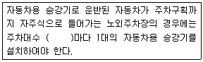
- 10대
- 15대
- 20대
- 30대
(정답률: 52%)
82. 부설주차장의 총주차대수 규모가 8대 이하인 자주식주차장의 주차형식에 따른 차로의 최소너비가 옳지 않은 것은?(단, 주차단위구획과 접하여 있는 차로의 너비)
- 평행주차 : 3m
- 직각주차 : 6m
- 교차주차 : 3.5m
- 45도 대향주차 : 4m
(정답률: 42%)
83. 자주식주차장으로서 건축물식 노외주차장에는 바닥으로부터 85cm 높이에 있는 지점이 평균 얼마 이상의 조도를 유지할 수 있도록 조명장치를 설치하여야 하는가?
- 60럭스
- 70럭스
- 80럭스
- 85럭스
(정답률: 49%)
84. 다음은 비상용 승강기 승강장의 구조에 관한 기준 내용이다. ( ) 안에 알맞은 것은?
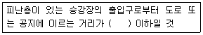
- 15m
- 20m
- 25m
- 30m
(정답률: 69%)
85. 다음 중 시설면적이 120m2일 때 부설주차장을 설치하여야 하는 건축물은?(단, 국토의 계획 및 이용에 관한 법률에 따른 도시지역에서 건축하는 건축물의 경우)
- 호텔
- 백화점
- 예식장
- 유흥주점
(정답률: 56%)
86. 건축물의 출입구에 설치하는 회전문은 계단이나 에스컬레이터로부터 최소 몇 미터 이상의 거리를 두어야 하는가?
- 0.5m
- 1.0m
- 1.5m
- 2.0m
(정답률: 77%)
87. 대지면적이 600m2이고, 조경면적이 대지면적의 15%로 정해진 지역에 건축물을 신축할 경우, 옥상에 조경을 90m2 시공하였다면, 지표면의 조경면적은 최소 얼마 이상이어야 하는가?
- 0
- 30m2
- 45m2
- 60m2
(정답률: 70%)
88. 건축물의 층수가 21층이고 각 층의 거실면적이 1,000m2인 숙박시설에 설치하여야 하는 승용 승강기의 최소대수는?(단, 8인승 승강기의 경우)
- 6대
- 7대
- 8대
- 9대
(정답률: 56%)
89. 각 층의 바닥면적이 1,200m2인 백화점의 피난층에 설치하는 건축물의 바깥쪽으로의 출구의 유효너비의 합계는 최소 얼마 이상이어야 하는가?
- 3.6m
- 4.5m
- 7.2m
- 9.0m
(정답률: 55%)
90. 토지의 이용 및 건축물의 용도, 건폐율, 용적률, 높이 등에 대한 용도지역의 제한을 강화 또는 완화하여 적용함으로써 용도지역의 기능을 증진시키고 미관, 경관, 안전 등을 도모하기 위하여 도시관리계획으로 결정하는 지역은?
- 용도구역
- 용도지구
- 도시계획지역
- 개발밀도관리구역
(정답률: 62%)
91. 건축물의 층수 산정방법에 관한 기준 내용으로 옳지 않은 것은?
- 지하층은 건축물의 층수에 산입하지 않는다.
- 건축물이 부분에 따라 그 층수가 다른 경우에는 바닥면적에 따른 평균층수를 그 건축물의 층수로 본다.
- 층의 구분이 명확하지 아니한 건축물은 그 건축물의 높이 4m마다 하나의 층으로 보고 그 층수를 산정한다.
- 옥탑의 경우 그 수평투영면적의 합계가 해당 건축물 건축면적의 8분의 1이하인 것은 건축물의 층수에 산입하지 않는다.
(정답률: 54%)
92. 주차전용건축물의 경우 주차장 외의 용도가 업무시설로 사용될 때 건축물의 연면적 중 주차장으로 사용되는 비율은 최소 얼마이상이어야 하는가?
- 70%
- 80%
- 90%
- 95%
(정답률: 79%)
93. 그림과 같은 대지의 A점에서 건축할 수 있는 건축물의 최고층수는?(단, 건축물의 층고는 3m이다.)
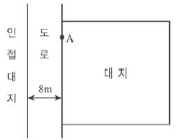
- 3층
- 4층
- 5층
- 6층
(정답률: 68%)
94. 피뢰설비를 설치하여야 하는 건축물의 높이기준은?
- 10m 이상
- 15m 이상
- 20m 이상
- 31m 이상
(정답률: 83%)
95. 건축물을 건축하는 경우 국토교통부령으로 정하는 구조기준 등에 따라 그 구조의 안전을 확인하여야 하는 대상 건축물 기준으로 옳지 않은 것은?
- 층수가 2층 이상인 건축물
- 높이가 13m 이상인 건축물
- 처마높이가 9m 이상인 건축물
- 연면적이 1,000m2 이상인 건축물
(정답률: 52%)
96. 다음 중 내화구조에 해당하지 않는 것은?
- 철골조의 계단
- 철재로 보강된 유리블록으로 된 지붕
- 작은 지름이 20cm인 철골철근콘크리트조의 기둥
- 고온, 고압의 증기로 양생된 10cm 두께의 경량기포콘크리트패널로 된 벽
(정답률: 45%)
97. 건축물과 해당 건축물의 건축법상 용도의 연결이 옳지 않은 것은?
- 골프연습장 - 운동시설
- 도서관 - 문화 및 집회시설
- 다중주택, 다가구주택 - 단독주택
- 연립주택, 다세대주택 - 공동주택
(정답률: 60%)
98. 오피스텔의 난방설비를 개별난방방식으로 하는 경우에 관한 기준 내용으로 옳지 않은 것은?
- 보일러의 연도는 내화구조로서 개별연도로 설치할 것
- 보일러실 윗부분에는 그 면적이 0.5m2 이상인 환기창을 설치할 것
- 난방구획마다 내화구조로 된 벽, 바닥과 갑종방화문으로 된 출입문으로 구획할 것
- 기름보일러를 설치하는 경우에는 기름저장소를 보일러 외의 다른 곳에 설치할 것
(정답률: 57%)
99. 다음 중 건축법상 주요구조부에 해당하지 않는 것은?
- 기초
- 내력벽
- 지붕틀
- 주계단
(정답률: 66%)
100. 보도와 차도의 구분이 없는 주거지역의 도로에서는 주차대수 1대당 최소주차단위구획은?(단, 평행주차형식인 경우)
- 2×5m
- 2×6m
- 2.3×5m
- 2.3×6m
(정답률: 40%)